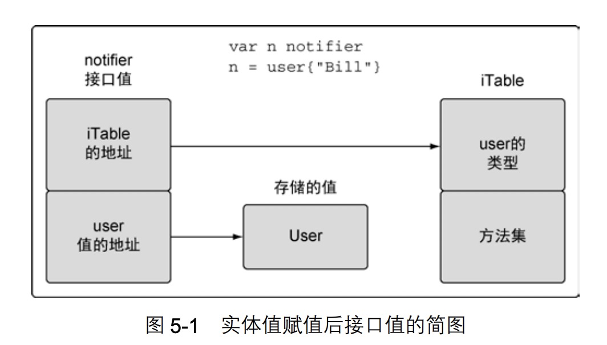
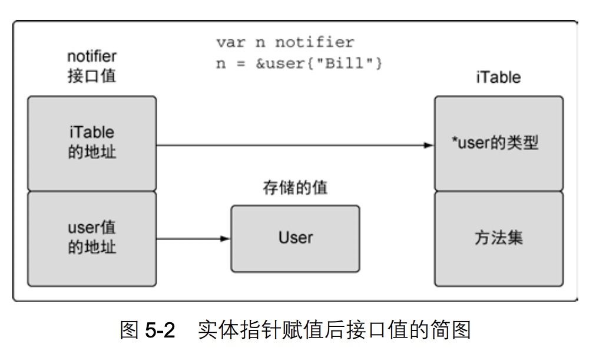

Go语言实战-类型系统
用户定义的类型
声明结构类型。
type admin struct {
level int
person user
}
type user struct {
name string
age int
}
|
声明变量。
var mike user
mike := user{
name: "Mike",
age: 24,
}
root := admin{
person: user{
name: "Mike",
age: 24,
},
level: 1,
}
mike := user{"Mike", 24}
|
基于内置类型声明一个新类型。
虽然int64是Duration的基础类型，但是int64与Duration是不同的类型。
不同类型的变量赋值会报错。
type Duration int64
func main() {
var dur Duration
dur = int64(1000)
}
|
方法
不管方法的接受者为值还是指针，都可以可以使用值或指针来调用方法。这是由于Go在背后做了转换，如下所示。
func (u user) notify() {}
lisa := &user{}
lisa.notify()
(*lisa).notify()
(&lisa).notify()
|
类型的本质
方法是传递指针还是值？
不是根据创建一个新值就使用值接受者，修改值就使用指针接受者。而是依据类型的本质。
在讨论类型的本质之前，我们先来看下以下三种类型。
内置类型
内置类型：数值类型、字符串类型、布尔类型。对这些值增加或删除时，会创建一个新值。
func Trim(s string, cutset string) string {
...
}
|
原始本质
引用类型
引用类型：切片、映射、接口和函数类型。声明这些类型的变量，这个变量被称为标头（header），header里面包含指针，所以引用类型值的副本，本质上就是共享底层数据结构。
func xxx(xx []byte) string {
...
}
|
引用类型的值也跟内置类型一样对待，原始本质。
结构类型
结构类型的本质可以是原始的，也可以是非原始的。大多数情况下结构类型是非原始的。
原始本质。
type Time struct {
sec int64
nsec int32
loc *Location
}
func Now() Time {
...
}
func (t Time) Add(d Duration) Time {
...
}
|
非原始本质。
type File struct {
*file
}
type file struct {
fd int
name string
dirinfo *dirInfo
nepipe int32
}
func Open(name string) (file *File, err error) {
return OpenFile(name, O_RDONLY, 0)
}
func (f *File) Chdir() error {
if f == nil {
return ErrInvalid
}
if e := syscall.Fchdir(f.fd); e != nil {
return &PathError{"chdir", f.name, e}
}
}
|
- 由于File类型的值是不能安全复制的(不允许多个File变量操作同一个文件)，所以采用内嵌类型阻止其复制。
- Chdir方法并没有修改File的值，但还是使用指针。说明如果类型是非原始本质的，接受者就需要是指针类型的。
- 第2点有个例外是，当类型值符合某个接口时候，即便类型的本质是非原始的，也可以使用值接受者声明方法。
接口
实现接口，体现了事物的多态。只要实现某接口的类型值，都可以传入使用该接口的地方。
func main() {
r, err := http.Get(os.Args[1])
if err != nil {
fmt.Println(err)
return
}
io.Copy(os.Stdout, r.Body)
if err := r.Body.Close(); err != nil {
fmt.Println(err)
}
}
|
其中os.Stdout实现了io.Writer接口，r.Body实现了io.Reader接口。
实现
接口值是一个两个字长度的数据结构，第一个字包含一个指向内部表的指针。这个内部表叫作 iTable，包含了所存储的值的类型信息。iTable 包含了已存储的值的类型信息以及与这个值相关联的一组方法。第二个字是一个指向所存储值的指针。
方法集
方法集定义了接口的接受规则。当接受者是值的时候方法集包括指针和值，当接受者是指针的时候方法集只能是指针。
| Methods Receivers |
Values |
| (t T) |
T and *T |
| (t *T) |
*T |
代码解释：
type duration int
func (d *duration) pretty() string {
return fmt.Sprintf("Duration: %d", *d)
}
func main() {
duration(42).pretty()
}
|
上述代码说明了，可能会出现取不到类型地址的情况出现。所以如果接受类型是指针就不允许值调用。
多态
type notifier interface {
notify()
}
type user struct {
name string
email string
}
func (u *user) notify() {
fmt.Printf("Sending user email to %s<%s>\n", u.name, u.email)
}
type admin struct {
name string
email string
}
func (a *admin) notify() {
fmt.Printf("Sending admin email to %s<%s>\n", a.name, a.email)
}
func main() {
bill := user{"Bill", "bill@email.com"}
sendNotification(&bill)
lisa := amdin{"Lisa", "lisa@email.com"}
sendNotification(&lisa)
}
func sendNotification(n notifier) {
n.notify()
}
|
嵌入类型
通过嵌入类型我们可以扩展和修改已有类型的行为。这个功能可以对代码进行复用。被嵌入的类型称为新的外部类型的内部类型。内部类型的标识符或方法会提升到外部类型上，可以在外部类型上声明与内部类型同名的标识符覆盖内部标识符或方法。
type user struct {
name string
email string
}
type admin struct {
user
level string
}
func (u *user) notify() {
...
}
func main() {
ad := admin {
user: user {
name: "denyu"
email: "extrnight@126.com"
},
level: "super",
}
ad.user.notify()
ad.notify()
}
|
如果嵌入类型实现某接口，外部类型也会实现这个接口。
type notifier interface {
notify()
}
type user struct {
name string
email string
}
func (u *user) notify() {
...
}
type admin struct {
user
level string
}
func main() {
ad := admin {
user: user {
name: "denyu"
email: "extrnight@126.com"
},
level: "super",
}
sendNotification(&ad)
}
func sendNotification(n notifier) {
n.notify()
}
|
公开或未公开的标识符
未公开的标识符，其他包不能直接访问到。但是可以通过下面的方式提供给其他包使用。
package counters
type alertCounter int
func New(value int) alertCounter {
return alertCounter(value)
}
package main
func main() {
counter := counters.New(10)
fmt.Printf("Counter: %d\n", counter)
}
|
内嵌类型中的公开未公开。
package entities
type user struct {
Name string
Email string
}
type Admin struct {
user
Level string
}
package main
func main() {
a := entities.Admin {
Level: "super",
}
a.Name = "Bill"
a.Email = "bill@email.com"
...
}
|
由于user类型是未公开的，所以无法直接通过字面量的方式初始化，但是其内部的标识符是公开的，被提升到了外部类型。
小结
- 方法提供了为用户定义的类型增加行为的方式。
- 设计类型时需要确认类型本质是原始的，还是非原始的。
- 接口是声明了一组行为并支持多态的类型。
- 嵌入类型提供了扩展类型的能力，而无需使用继承。
- 标识符要么公开，要么未公开。